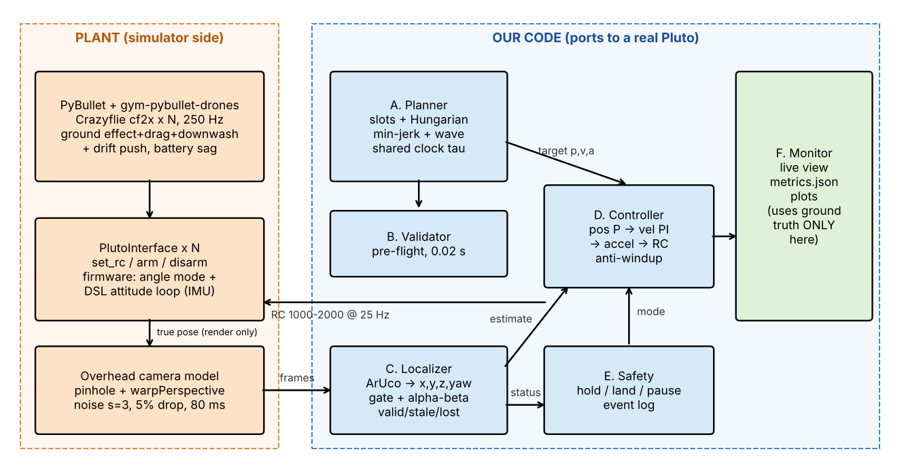
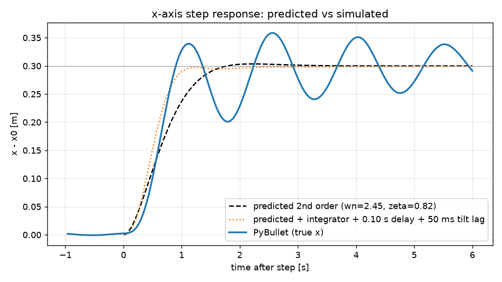

Vishesh Singh · 2502MT08 · Simulator: PyBullet / gym-pybullet-drones (cf2x, PYB_GND_DRAG_DW), 250 Hz physics, 25 Hz control · ROS 2: not attempted · External repo: utiasDSL/gym-pybullet-drones (physics + attitude part of DSLPIDControl inside PlutoInterface).

Information flow.
PlutoInterface.set_rc / arm / disarm, so the same code ports to a real Pluto by swapping that one class.logs/*/metrics.json)| Run | Track RMS (cm) ≤10 | Shape RMS (cm) | Phase sync (°) ≤10 | Min sep (m) ≥0.35 | Loc RMS (cm) | x/y/z loc (mm) |
|---|---|---|---|---|---|---|
| circle_N4 | 2.4 | 2.2 | 0.5 | 0.522 | 2.2 | 4/4/21 |
| line_N4 | 2.3 | 2.1 | 2.6 | 0.384 | 2.3 | 7/2/21 |
| line_N4_F1 | 2.3 | 2.1 | 3.2 | 0.384 | 2.3 | 8/2/22 |
| line_N4_F3 | 2.2 | 2.1 | 2.6 | 0.384 | 2.3 | 7/2/22 |
Events (line_N4_F1): see logs/line_N4_F1/events.csv. Events (line_N4_F3): see logs/line_N4_F3/events.csv.
M1. Quadrotor dynamics.
URDF (cf2x.urdf, values printed in model_info.json):
| Parameter | Value |
|---|---|
| Mass m | 0.027 kg |
| Arm L | 0.0397 m |
| k_f | 3.16·10⁻¹⁰ N/rpm² |
| k_m | 7.94·10⁻¹² N·m/rpm² |
| Thrust-to-weight | 2.25 |
| J | diag(1.4, 1.4, 2.17)·10⁻⁵ kg·m² |
Equations of motion:
Thrust limits and hover point:
Why underactuated: there are 4 independent inputs (T, τ_x, τ_y, τ_z) for 6 degrees of freedom. The thrust always acts along body z, so x and y can only be reached through attitude (tilt first, then accelerate). The flat outputs are (x, y, z, ψ).
M2. Wave kinematics.
Thrust-limited maximum ω at 93 % battery:
The practical limit is delay τ ≈ 0.12 s (camera + control):
M3. Separation.
For drones i and j with horizontal offset Δh:
d_ij(t)² = Δh² + [2A sin(Δφ/2) cos(ωt − φ̄)]²
The second term reaches 0 every half-cycle, so d_min = Δh:
Line limits: need d ≥ 0.35 and (N − 1)d ≤ 2.0, so N_max = 6.
Circle limits:
Is N = 10 possible?
Transit safety. We assign slots by minimising Σ‖a_i − b_i‖² (Hungarian algorithm).
M4. Camera geometry.
The camera sits at height H = 3 m. Depth is Z = H − z, and the pixel coordinates are:
u = f_x x/Z + c_x, v = −f_y y/Z + c_y
Inverse mapping: x = (u − c_x)Z/f_x and y = −(v − c_y)Z/f_y. Depth comes from marker size: Z = f_x s/ℓ_px.
Field of view:
| Drone height z | Field of view | Notes |
|---|---|---|
| 0.6 m | ±1.71 × ±0.96 m | |
| 1.4 m | ±1.14 × ±0.64 m | Arena y = ±0.6 barely fits |
Cost of a 1-pixel error:
| Height | δx, δy = Z/f | δZ = Z²/(f s) per px of marker size |
|---|---|---|
| z = 0.6 m | 2.7 mm | 8.0 cm |
| z = 1.4 m | 1.8 mm | 3.6 cm |
z is the worst axis. x and y come from the marker centre, but depth is visible only through the marker's apparent size (25–45 px). Sensitivity grows with Z², about Z/s ≈ 20–30× worse than x and y.
Measured (tools/calibrate_vision.py) std is 3–4 mm in x/y and 9–15 mm in z. We use a level-marker model rather than 6-DoF PnP, because PnP's tilt is ill-conditioned for a ~36 px marker and was 2–3× worse.
M5. Control design.
Linearised about hover with small angles:
Per axis, the cascade is v_cmd = K_p e_p + v_ff and a = K_v(v_cmd − v) + K_i∫e_v + a_ff, which gives ẍ + K_v ẋ + K_vK_p x = K_vK_p x_ref:
Chosen gains:
Design rules:
Predicted vs simulated x-step (0.3 m): see figure; numbers printed by step_test.py.

1. Kalman filter with latency.
State per axis: x = [p, v, d]ᵀ, where d is a constant disturbance (drift, hover error). The input u is the commanded acceleration.
Handling the 80 ms camera delay:
Handling the 40 ms command delay: before computing the control, predict 40 ms further ahead using the commands already sent (Smith-predictor idea).
The estimated d also becomes a feed-forward term, so the integrator has less work.
2. Yaw drift 0.5 °/s.
Roll/pitch commands act in the body frame. If heading is wrong by δ, the actual acceleration is a = R_z(δ) a_cmd.
controller.acc_to_rc). The firmware's drifting yaw never enters our maths.3. Downwash.
Data collection: hover drone A, then place drone B below it on a grid of (r, Δz) points. B's z-integrator (Iz in telemetry) directly reads the extra thrust it needs.
Fit the gym-pybullet-drones form: F_dw = −α(Δz) exp(−½(r/β(Δz))²), with α = k₁(r_p/4Δz)² and β = k₂Δz + k₃.
The cone radius is r_dw(Δz) = β·√(2 ln(α/F_tol)), with F_tol ≈ 5 % of mg.
Validator rule: for every sample and every pair with z_j < z_i, require r_ij > r_dw(z_i − z_j); otherwise reject with "drone j in downwash of i at t".
4. Thrust and tilt limits.
For each plan sample, compute the required force f = m(a_plan + a_margin + g e_z), where a_margin covers drift (0.15√3) plus controller authority. The plan is flyable only if all three hold:
A simplified version (50 % margins) is already in validator.py.
5. Fault drills.
F2 — drone 3's marker hidden 1.2 s:
Residual drift during the gap is ½·Δa·t², which is under 2 cm with learned trims.
F4 — drone 0 gets no commands for 1 s: its firmware failsafe levels it and descends. Vision-only detection:
Reaction:
6. Sim-rendered camera.
p.computeViewMatrix(eye=[0,0,3], target=[0,0,0], up=[0,1,0])p.computeProjectionMatrixFOV(fov=2·atan(360/900)=43.6°, aspect=16/9, near=0.1, far=5), which reproduces f = 900.p.getCameraImage(1280, 720)Each drone gets a thin marker link with p.loadTexture(aruco_i.png) applied via changeVisualShape. Then:
(MuJoCo equivalent: <camera fovy> plus <texture>/<material> on a marker geom.)
7. Scaling 4 → 10.
What breaks first is the arena.
Next are comms: 10 Wi-Fi/MSP links at 25 Hz on one channel bring jitter and packet loss. Fixes: router/station mode and staggered send slots.
Compute last. Complexity per tick:
| Component | Cost |
|---|---|
| Localisation | O(pixels) + O(N) |
| Control | O(N) |
| Separation check | O(N²) = 45 pairs |
| Validator | O((T/Δt)·N²) ≈ 10⁵ distance checks |
| Hungarian assignment | O(N³) |
| Physics downwash | O(N²) |
All trivial at N = 10.
step_test.py).summary.png, learned hover throttle).SimWorld replaces it with the same model applied only when the upper drone is ≥ dw_min_dz = 5 cm higher and its motors are spinning.Everything below builds on this repo and could be done by a small team in weeks, not months. Each stage has a pass gate; a change moves to the next stage only if it passes.
| # | Stage | Tools | What it catches | Pass gate |
|---|---|---|---|---|
| 1 | Unit tests | pytest, GitHub Actions | Maths bugs: min-jerk endpoints, assignment optimality, validator limits vs closed form, filter steady state | All tests green on every push |
| 2 | Regression sim | This PyBullet sim, headless, in CI | Performance regressions | Metrics within 10% of the last release |
| 3 | Monte Carlo | Same sim, 100+ seeds; sweep drift, latency (80–150 ms), noise, drop rate (5–15%), battery | Lucky-seed results, fragile tuning | ≥ 95% runs pass all PS targets; worst-case min separation ≥ 0.35 m |
| 4 | Firmware-in-the-loop | Betaflight SITL (already supported by gym-pybullet-drones BetaAviary) |
Real firmware behaviour: RC mapping, arming, failsafe (F4), loop timing | Same metrics as stage 3 within 20% |
| 5 | ROS 2 + better camera | ROS 2 Humble/Jazzy, Gazebo Harmonic camera with textured ArUco markers, RViz2, rosbag2, Docker | Integration bugs, message timing, real rendering effects (blur, lighting) | Same code runs unchanged; F1/F3 drills pass |
| 6 | Vision on the real rig | Real overhead camera, ChArUco calibration (cv2.aruco), drones carried by hand along a taped grid |
Real lens distortion, latency, lighting | Localisation RMS ≤ 2 cm vs grid; latency measured with an LED blink |
| 7 | Single-drone HIL | PlutoInterface swapped for an MSP-over-Wi-Fi client; tethered, then free hover |
Real hover throttle, thrust curve, command delay | Re-run step_test.py on hardware; overshoot and settling within 30% of sim |
| 8 | Staged swarm flights | Same code, geofence + kill switch | Downwash, Wi-Fi packet loss, battery spread | 1 drone → 2 at 1 m → 4 in line → wave; same metrics table as sim |
Why these tools: PyBullet stays the fast inner loop (hundreds of runs per hour for Monte Carlo). Gazebo with ROS 2 is the standard for integration and gives a sim-rendered camera (Methodology 6). Betaflight SITL is the closest open firmware to the Pluto's, so failsafes are tested before real props spin. One telemetry CSV and one metrics script run on sim and hardware logs alike, so sim and real results are compared on the same numbers.
What I would build first: stage 3 (a loop over seeds in run_mission.py) and stage 7's MSP client, since PlutoInterface is already the only door to the drone.